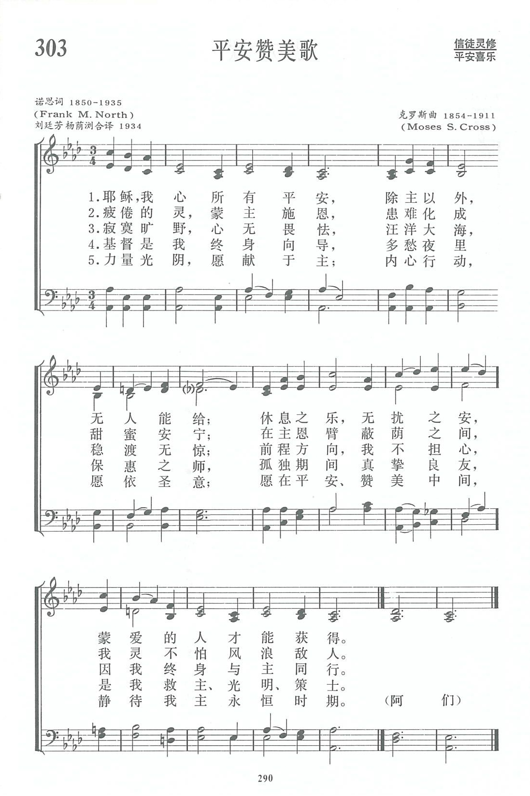

|
|
第303首《平安赞美歌》 |
|
1 Jesus, the calm that fills my breast, 2 My weary soul has found a charm 3 In desert wastes I feel no dread, 4 O Christ, through changeful years my Guide, 5 My time, my powers, I give to Thee; Amen. |
|
|
https://www.zanmeishige.com/tab/13976.html?songbook=1&index=303

|
|
|
|
|

| Text: | Jesus, the calm that fills my breast |
| Author: | F. Mason North |
| Tune: | WARATAH |
| Composer: | Moses S. Cross |
| Short Name: | Frank Mason North |
| Full Name: | North, Frank Mason, 1850-1935 |
| Birth Year: | 1850 |
| Death Year: | 1935 |
North, Frank Mason, D.D., b. at New York, Dec. 3, 1850,
graduated at Wesleyan
University 1872, and entered the ministry of the Methodist Episcopal Church
1872. In 1892 he became Correspondence Secretary of the New York City Church
Extension and Missionary Society, and is now (1905) editor of The Christian
City. His hymns in common use include:—
1. Jesus, the calm that fills my breast. [Peace.]
In The Plymouth Hymnal,1894; Sursum
Corda, 1898; The Methodist Hymnal, 1905, &c.
2. When cross the crowded ways of life. [City
Missions.] In The Methodist Hymnal, 1905. [Rev.
L. F. Benson, D.D.]
--John Julian, Dictionary of Hymnology, New Supplement (1907)
Music: Waratah Moses
S. Cross (1854–1911)
第303首 平安赞美歌 Jesus the calm that fills my breast _F.M．North
经文：“我将这些事告诉你们，是要叫你们在我里面有平安”(约16:33)。
这首诗的作者是美国美以美会牧师诺思(F.M．North，1850—1935)。他在卫斯理大学研究院毕业后被按立为牧师，历任多堂牧师,以后任教会杂志编辑和美以美会海外布道会干事，又作过美以美会总会计，出版过若干首赞美诗，《普天颂赞》第252首“生命路程歌”也是他的作品之一，表达了他反对种族歧视，向往社会正义，而这首《平安赞美歌》则是一首灵修圣诗。从他的这两首名歌，可以看出服务与灵修应该并行和互相促进。
曲调是美国美以美会牧师克罗斯(M．S.Cross，1854—1911)所谱。克氏曾在美国太平洋大学任教，一度代理过校长，同时也是一位语言学家和业余音乐家。
这首诗告诉人们：内心的平安是从主而来，“除主以外，无人能给。”有了主，任凭寂寞旷野，汪洋大海，多愁夜里，孤独时期，蒙爱的人都能获得“休息之乐，无扰之安”。因主所赐的平安与人不同。
曲调处理比较特殊，它的结束为降A大调的3，这是少见的，旋律虽起伏较大，如后半段的但却令人觉得优美和顺，好似人们虽置身于波浪翻腾的海船上，却能怡然自如，因为有主同在，风浪都听从他的命令。